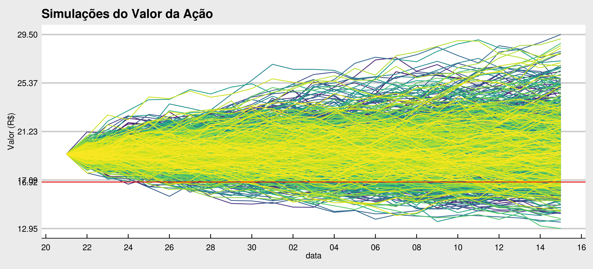
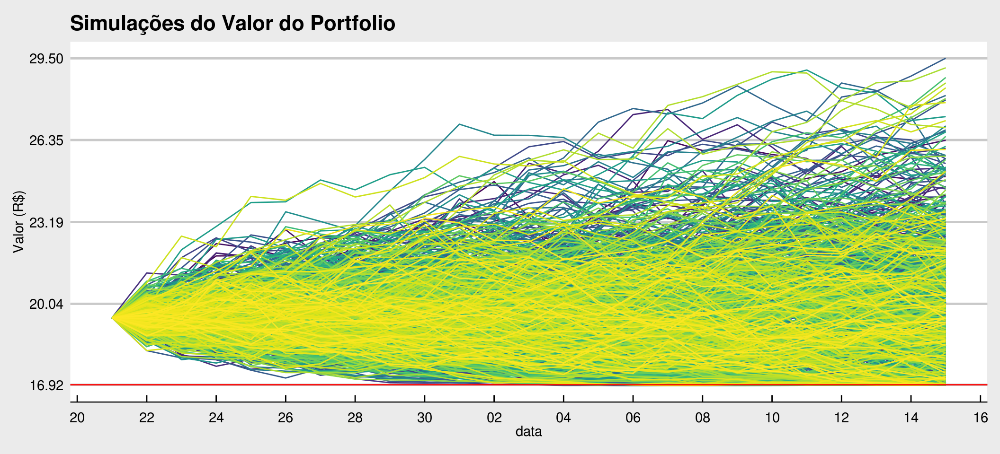

Capítulo 9 Simulação de Monte Carlo
Em capítulo anterior, sobre processos estocásticos, fizemos uso de uma poderosa ferramenta computacional, frequentemente utilizada em finanças para fazer simulações. Naquele artigo simulamos cinco realizações de caminhos de um processo estocástico, cada um com 500 passos a frente. Esta técnica é conhecida como Simulação de Monte Carlo - SMC e será abordada no presente artigo.
Neste artigo também iremos introduzir, no corpo do texto, os códigos em linguagem R utilizados para fazer as simulações, aumentando a didática de nossos artigos. A linguagem R é uma das preferidas para a modelagem estatística, é uma das linguagens de ciência de dados que vem ganhando muitos adeptos e, por conseguinte, é amplamente utilizada pelo mercado financeiro. E claro, é uma das preferidas aqui do CF também.
Nosso problema será simular a posição de um portfólio composto por uma posição comprada em uma ação PETR4 e uma put PETRV17. A opção de venda (put) tem preço de exercício em R$ 16,92, data de expiração em 15/10/2018 e é do tipo europeia. Ao final do pregão do dia 21/09/2018 a ação PETR4 fechou cotada a R$ 20,14 e a put em R$ 0,12. A partir desta data até o dia da expiração da opção haverão 16 dias de pregão, que será nosso horizonte de simulação.
Para melhoria da didática do texto e também para simplificação do problema, manteremos algumas variáveis necessárias para a precificação de opções constantes ao longo do período de análise, são elas:
Volatilidade: Será calculada a volatilidade implícita da opção da data de compra do portfólio, 21/09/2018, e será mantida constante a partir daí para fins de precificação na SMC;
Taxa de juros: constante no valor de 6,5 %a.a. tem termos contínuos;
Taxa de dividendos: suposto igual a zero.
9.1 Simulação de Monte Carlo
Para realizar uma SMC de um ativo financeiro deve-se primeiramente estabelecer uma distribuição de probabilidades que os retornos deste ativo deve seguir. Em nosso exemplo, utilizaremos a distrbuição normal para os retornos logarítimicos da ação PETR4, em linha com o clássico modelo Black & Scholes, certamente existem diversas variantes que se ajustam melhor a realidade dos mercados, entretanto este é o modelo mais conhecido e base de todos os demais.
Uma vez escolhida a distribuição dos (log) retornos, tem-se de escolher valores para a média e variância desta distribuição. A média dos retornos iremos tirar do histórico da ação, o retorno médio diário dos último ano. A variância da distribuição será encontrada a partir da volatilidade implícita da opção na data de compra do portfólio. A função utilizada para encontrar esta volatilidade retorna um valor em termos anuais, portanto, conforme visto no capítulo sobre processos estocásticos devemos reescalar uma volatilidade anual para diária, e isto é obtido fazendo a divisão por \(\sqrt{252}\), onde temos 252 dias úteis em 1 ano.
Desta forma é possível fazer a simulação dos log-retornos da ação para cada um dos dias a frente, até a data de exercício da opção, 15/10/2018. Estes retornos são acumulados e o preço simulado da ação PETR4 em uma data intermediária é o preço de compra vezes o retorno acumulado até então.
Faremos 1.000 simulações destas, gerando caminhos possíveis de preços para a ação. É necessário fazer muitas simulações para termos uma boa ideia da distribuição dos preços na data final, não é raro serem feitas mais de mil simulações, as vezes até dez mil podem ser necessárias.
Uma vez gerados todos os caminhos simulados do preço do ativo objeto, podemos então precificar a put com base nestes preços simulados e as outras variáveis necessárias para se precificar uma opção europeia. Assim teremos também todos os caminhos de preço para a opção até sua data de exercício.
O valor de nosso portfólio, em qualquer ponto do intervalo de tempo em análise, será a soma do preço da ação com o preço da opção e será possível verificar o efeito de proteção contra quedas do preço do ativo objeto a compra da put tem no portfólio.
Cabe ressaltar aqui que o preço da opção não é simulado, não diretamente. Como a opção é um instrumento derivativo o seu preço “deriva” do preço do ativo objeto, este sim que é simulado. Uma vez que tenhamos o preço da ação, dadas nossas premissas de precificação, podemos calcular o prêmio da opção com base no modelo Black & Scholes.
9.2 Implementação em R
Conforme comentado, utilizamos aqui no CF a linguagem de programação R para realizar nossas atividades que envolvam métodos quantitativos em finanças. Abaixo irei apresentar o código utilizado, trecho a trecho e o resultado obtido ao final.
Primeiramente, no R, devemos carregar em nossa sessão de trabalho os pacotes que serão utilizados ao longo do código. Os pacotes funcionam como extensões ao R base, nestes pacotes encontramos diversas funções já programadas por outras pessoas que facilitam (e muito!) a nossa codificação.
library(tidyverse)
library(ggthemes)
library(tidyquant)
library(ragtop)O pacote ragtop, por exemplo, possui já implementado dentro dele funções para fazer a precificação de opções europeias, sem que se tenha que implementar o modelo manualmente. Como a intenção deste artigo não é explicar o modelo Black & Scholes, vamos abstrair esta parte e simplesmente chamar uma função que nos retorna o valor da opção dadas as variáveis de entrada.
Em seguida iremos definir algumas de nossas variáveis, como o ticker da ação para buscar seus dados históricos através da função tq_get() do pacote tidyquant e calcular os retornos logarítimicos e tirar sua média, o preço e data de exercício da opção e também iremos relacionar os dias entre a data de compra e vencimento.
acao <- "PETR4.SA"
p_exer <- 16.92
d_exer <- as.Date("2018-10-15")
d_atual <- as.Date("2018-09-21")
dias <- seq(d_atual, d_exer, by = 1)
#dias <- dias[isBusinessDay("Brazil", dias)]
nsims <- 1000
ndias <- length(dias) - 1
sim_nomes <- paste0("sim", 1:nsims)
# Carregar os precos historicos da acao
p_hist <- tq_get(acao, from = d_atual - years(1), to = d_atual + days(1)) %>%
filter(volume != 0.0)
ret_hist <- p_hist %>%
tq_mutate(select = adjusted,
mutate_fun = periodReturn,
period = "daily",
type = "log",
leading = FALSE,
col_rename = "log_ret") %>%
na.omit()
rf <- log(1 + 0.065)
div <- 0
S0 <- last(ret_hist$adjusted)
P0 <- 0.12
mi <- 252 * mean(ret_hist$log_ret) # retorno medio em termos anuais
sigma <- implied_volatility(P0, -1, S0, p_exer, rf, (ndias + 1) / 365,
divrate = div)Com o código acima obtemos basicamente todos os dados com os quais poderemos implementar a simulação de Monte Carlo. Entretanto, para realizar as simulações, necessitamos especificar mais algumas funções customizadas para nossas necessidades.
Primeiro iremos especificar uma função que retorna uma única simulação de log-retornos acumulados em uma coluna de dados, esta função é chamada de mc_sim_fun. A segunda função necessária é a função de precificação da opção europeia. Por padrão, a função blackscholes() do pacote ragtop retorna uma lista com o valor da opção, mas também suas gregas \(\Delta\) e \(\nu\).
# Funcao para realizar uma simulacao
mc_sim_fun <- function(valor_i, N, media, volat){
med_d <- media / 252
volat_d <- volat / sqrt(252)
ans <- tibble(c(valor_i, rnorm(N, med_d - (volat_d^2 / 2), volat_d))) %>%
`colnames<-`("log_ret") %>%
mutate(ret_ac = cumsum(log_ret)) %>%
select(ret_ac)
return(ans)
}
# Funcao para precificar uma opcao europeia
eur_option <- function(type, S0, K, r, time, vola, div) {
callput <- ifelse(type == "call", 1, -1)
ans <- blackscholes(callput, S0, K, r, time, vola, divrate = div)$Price
return(ans)
}Uma vez com os dados obtidos e as funções auxiliares programadas, podemos passar a SMC propriamente dita. Aqui vamos estabelecer o número de simulações (1.000), calcular um data frame com os log-retornos acumulados e então calcular o preço da ação para cada dia e simulação realizados. O preço da ação na data \(t\) será \(S_t=S_0 e^{r_t}\), onde \(r_t\) é o log-retorno acumulado até a data \(t\).
Após termos todos os preços do ativo objeto, passamos a computar qual seria o preço da opção, \(P_t\), naquelas condições. O valor do portfólio é dado pela soma destes dois preços (lembre-se, nosso portfólio é composto por uma ação e uma opção de venda).
# Simulacao de Monte Carlo
# Valores Iniciais
inic <- rep(0, nsims)
set.seed(12345)
ret_ac_mc <- map_dfc(inic,
mc_sim_fun,
N = ndias,
media = mi,
volat = sigma)
precos_acao <- (S0 * exp(ret_ac_mc)) %>%
set_names(sim_nomes) %>%
mutate(anos_exp = (ndias:0) / 252) %>%
gather(key = sims, value = St, -anos_exp)
# Evolucao do Portfolio
port_mc <- precos_acao %>%
mutate(Pt = map2_dbl(St, anos_exp,
~eur_option(type = "put",
S0 = .x,
K = p_exer,
r = rf,
time = .y,
vola = sigma,
div = div)),
port_valor = Pt + St,
data = rep(dias, nsims))
head(port_mc)## anos_exp sims St Pt port_valor data
## 1 0.09523810 sim1 19.30621 0.19686672 19.50308 2018-09-21
## 2 0.09126984 sim1 19.63459 0.14549767 19.78009 2018-09-22
## 3 0.08730159 sim1 20.03720 0.09854935 20.13575 2018-09-23
## 4 0.08333333 sim1 19.98975 0.09392868 20.08368 2018-09-24
## 5 0.07936508 sim1 19.75327 0.10469105 19.85796 2018-09-25
## 6 0.07539683 sim1 20.10059 0.07008349 20.17067 2018-09-26O data frame port_mc contém todas as informações da SMC de nosso portfólio. Contém as datas desde o dia da compra até a data de vencimento da opção e contém todos os caminhos de \(S_t\), \(P_t\) e do portfólio. Vamos plotar os resultados obtidos para a evolução apenas da ação, primeiramente.
brk <- round(sort(c(p_exer, seq(min(port_mc$St),
max(port_mc$St),
length.out = 5))),
digits = 2)
ggplot(port_mc, aes(x = data, y = St)) +
geom_line(aes(color = sims)) +
geom_hline(yintercept = p_exer, color = "red") +
guides(color = FALSE) +
labs(title = "Simulações do Valor da Ação",
x = "data",
y = "Valor (R$)") +
scale_y_continuous(breaks = brk) +
scale_x_date(date_breaks = "2 days", date_labels = "%d") +
scale_color_viridis_d() +
theme_economist_white()
Podemos verificar pela figura acima que a ação, pela nossa SMC, deve fechar na maioria dos caminhos simulados acima do preço de exercício da put (linha vermelha). Entretanto existe uma menor probabilidade de, até a data de vencimento, o preço da ação cair abaixo do strike desta opção.
Podemos inferir esta probabilidade através do número de caminhos que terminaram em preço da ação abaixo do valor de referência. O custo de proteção contra este risco é o prêmio por nós ao comprarmos a put. O código para esta inferência está abaixo.
p_baixo <- port_mc %>%
filter(data == d_exer) %>%
summarise(num_baixo = sum(St < p_exer)) %>%
as.double()
prob <- p_baixo / nsimsEste cálculo nos mostra que em 135 caminhos simulados do preço de PETR4, este terminou abaixo do preço de exercío da opção PETRV17, ou seja, uma probabilidade de 13.5%.
Para nos precavermos desta possível queda de preço e garantir um valor mínimo de nosso portfólio até a data de 15/10/2018, podemos comprar uma opção de venda, com preço de exercício no valor que desejamos e então o portfólio passa a ser composto pela ação e também pela opção. Caso na data de vencimento o preço da ação seja menor que o preço de exercício da put, esta opção estará ITM e pode ser exercida pelo valor da diferença entre os preços, ou seja, nos garantindo que nosso portfólio estará avaliado em R$ 16,92.
Esta dinâmica pode ser verificada pela figura abaixo, que agora apresenta o valor do portfólio completo, ação mais opção. Verificamos que, de fato, no dia 15/10/2018 nosso investimento não estará em situação pior que o preço garantido pela compra da put.
brk <- round(sort(c(p_exer, seq(min(port_mc$port_valor),
max(port_mc$port_valor),
length.out = 5)[-1])),
digits = 2)
ggplot(port_mc, aes(x = data, y = port_valor)) +
geom_line(aes(color = sims)) +
geom_hline(yintercept = p_exer, color = "red") +
guides(color = FALSE) +
labs(title = "Simulações do Valor do Portfolio",
x = "data",
y = "Valor (R$)") +
scale_y_continuous(breaks = brk) +
scale_x_date(date_breaks = "2 days", date_labels = "%d") +
scale_color_viridis_d() +
theme_economist_white()
Ou seja, ao custo de 0.62% do preço da ação, compramos uma proteção contra uma queda de preços com probabilidade de 13.5%.
Esta é apenas uma (simples) aplicação das inúmeras possíveis que a Simulação de Monte Carlo possui no mundo das finanças. A SMC é uma poderosa ferramenta para avaliação e controle de risco de grandes portfólios, com centenas ou milhares de ativos, onde nem sempre consegue-se aferir medidas de retorno esperado ou de risco de mercado de forma analítica.